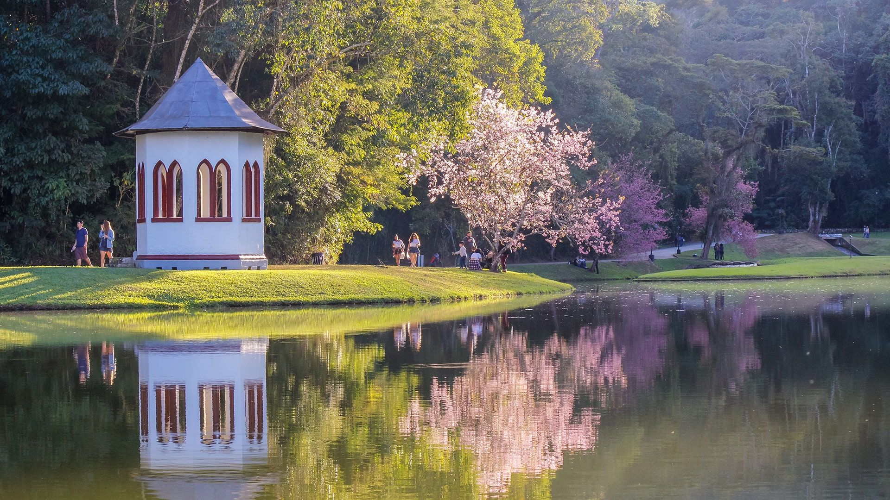
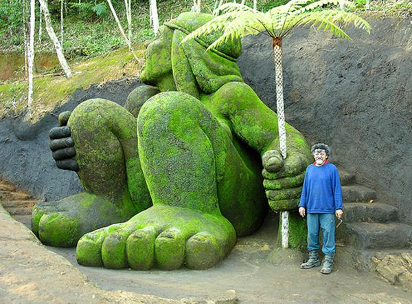
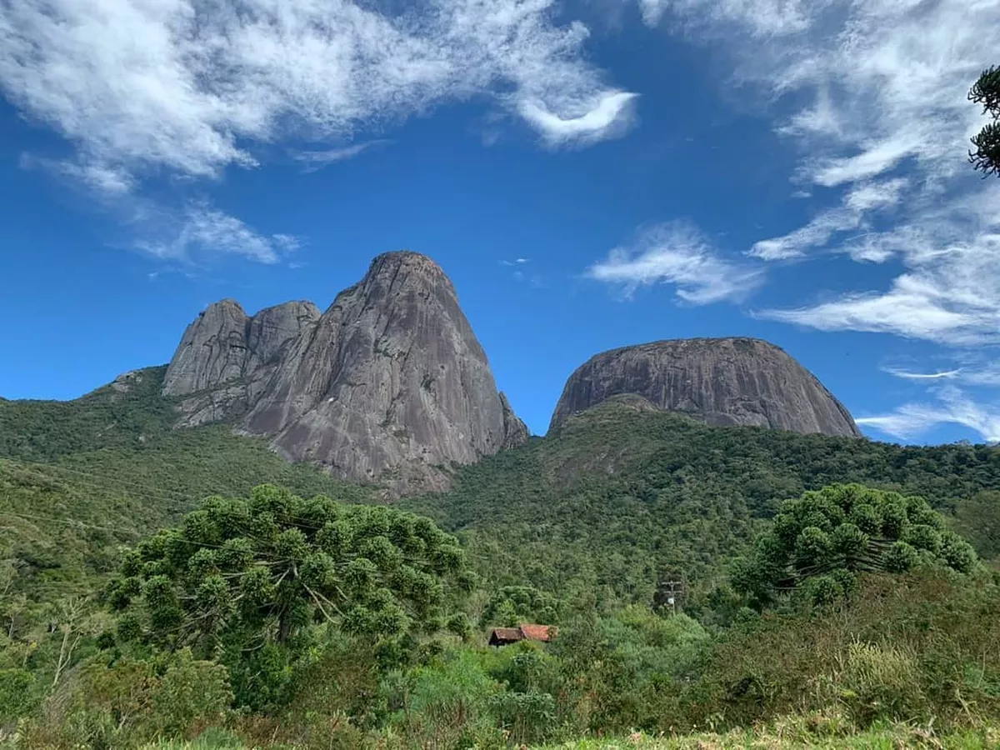

Pico do Caledônia -

Country Club - Localizado no Parque São Clemente funciona como um museu vivo de plantas raras e nativas

Jardim do Nêgo -

Parque Estadual dos Três Picos - Serras com altitude a 2 366 metros acima do nível do mar, é o ponto culminante de toda a Serra do Mar.

Pedra do Cão Sentado - Famoso monumento natural conhecido por sua forma que se assemelha a um cão sentado e por sua rica história e atividades ao ar livre